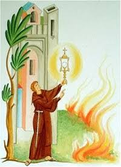
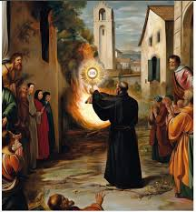

The Eucharistic Miracle of Dronero occurred on Sunday, August 3, 1631, when a devastating fire in the Italian town of Dronero was miraculously extinguished upon the arrival of the Blessed Sacrament.
A fire started by accident in dry hay was fanned by strong winds and a thunderstorm, causing it to spread rapidly into the commercial district and homes of Borgo Maira. Townspeople were unable to contain the intense, advancing flames.
Friar Maurice da Ceva, a local Capuchin monk, organized a solemn procession with the townspeople toward the fire, carrying the Blessed Sacrament. The exact moment the Blessed Sacrament arrived at the scene, the advancing fire immediately subsided and went out.